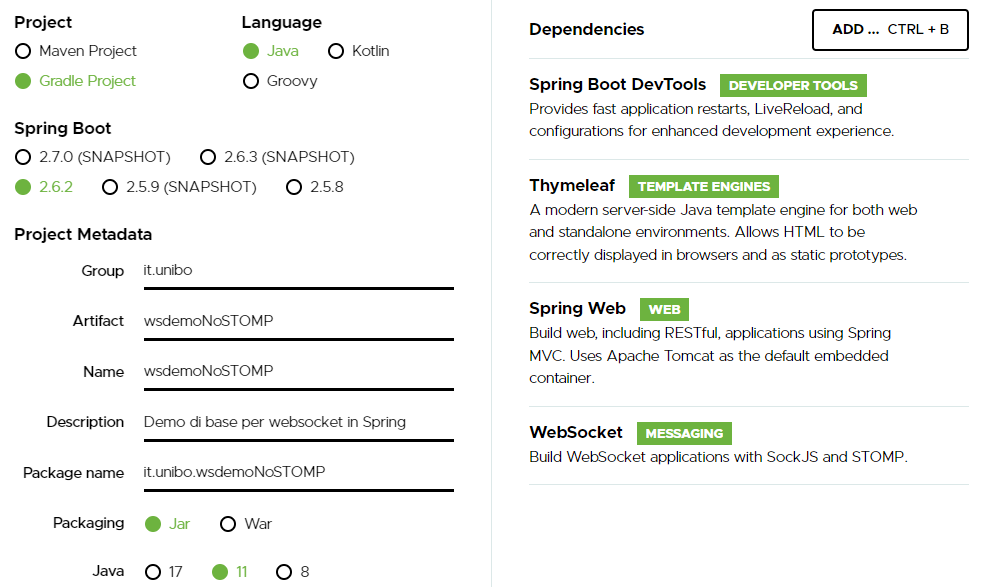
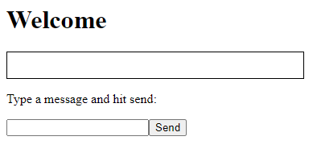
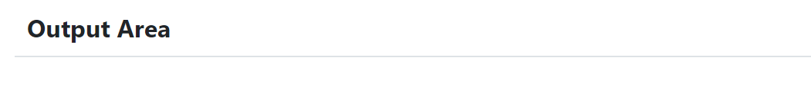

WebSockets¶
WebSocket è un protocollo che consente a due o più computer di comunicare tra loro in modo full-duplex su una singola connessione TCP. È uno strato molto sottile su TCP che trasforma un flusso di byte in un flusso di messaggi (testo o binario).
A differenza di HTTP, che è un protocollo a livello di applicazione, nel protocollo WebSocket non ci sono abbastanza informazioni in un messaggio in arrivo affinché un framework o un container sappia come instradarlo o elaborarlo.
Per questo motivo il WebSocket RFC definisce l’uso di sottoprotocolli. Durante l’handshake, il client e il server possono utilizzare l’intestazione Sec-WebSocket-Protocol per concordare un sottoprotocollo, ovvero un protocollo a livello di applicazione superiore da utilizzare. L’uso di un sottoprotocollo non è richiesto, ma anche se non utilizzato, le applicazioni dovranno comunque scegliere un formato di messaggio che sia il client che il server possano comprendere.
Nella sua forma più semplice,
un WebSocket è solo un canale di comunicazione tra due applicazioni
e non deve essere necessariamente coinvolto un browser.
Tuttavia l’uso più comune di WebSocket è facilitare la comunicazione tra un un’applicazione server e un’applicazione basata su browser. Infatti, rispetto a HTTP RESTful, ha il vantaggio di realizzare comunicazioni a bidirezionali e in tempo reale. Ciò consente al server di inviare informazione al client in qualsiasi momento, anziché costringere il client al polling.
I WebSocket utilizzano le Socket nella loro implementazione basata su un protocollo standard che definisce un handshake di connessione e un frame di messaggio.
WebSocket in SpringBoot: versione base¶
Come primo semplice esempio di uso di WebSocket in Spring, creiamo una applicazione che consente a un client di utilizzare un browser per inviare un messaggio o una immagine a un server che provvede a visualizzare il messaggio o l’immagine presso tutti i client collegati.
Setup¶
Iniziamo creando una applicazione SpringBoot collegandoci a Springio e selezionando come da figura:
{kind=link}
Il setup genera un file build.gradle con le seguenti dipendenze:
dependencies {
implementation 'org.springframework.boot:spring-boot-starter-thymeleaf'
implementation 'org.springframework.boot:spring-boot-starter-web'
implementation 'org.springframework.boot:spring-boot-starter-websocket'
developmentOnly 'org.springframework.boot:spring-boot-devtools'
testImplementation 'org.springframework.boot:spring-boot-starter-test'
}
Specifichiamo una nuova porta (il default è
8080) ponendo in resources/application.propertiesserver.port = 8085
Inseriamo un file
index.htmlin resources/static per poter lanciare un’applicazione che presenta un’area di ouput per la visualizzazione di messaggi e un’area di input per la loro immissione. In questo caso l’applicazione funzionerà anche senza la intoroduzione di un Controller
Il file index.html¶
<html> <head> <style> .messageAreaStyle { text-align: left; width: 50+; padding: 1em; border: 1px solid black; } </style> <title>wsdemoNoStomp</title> </head> <body> <h1>Welcome</h1> <div id="messageArea" class="messageAreaStyle"></div> <div class="input-fields"> <p>Type a message and hit send:</p> <input id="inputmessage"/><button id="send">Send</button> </div> <script src="wsminimal.js"></script> </body> </html>La pagina iniziale si presenta come segue:
{kind=link}
Lo script wsminimal.js¶
Lo script wsminimal.js definisce funzioni che realizzano la connessione con il server
e funzioni di I/O che permettono di inviare un messaggio al server e di visualizzare la risposta.
Funzioni di connessione e ricezione messaggi¶
connect: effettua una connessione alla WebSocket e riceve i messaggi inviati dal server.
var socket = connect();
function connect(){
var host = document.location.host;
var pathname = document.location.pathname;
var addr = "ws://" +host + pathname + "socket" ;
// Assicura che sia aperta un unica connessione
if(socket!==undefined && socket.readyState!==WebSocket.CLOSED){
alert("WARNING: Connessione WebSocket già stabilita");
}
var socket = new WebSocket(addr); //CONNESSIONE
socket.onopen = function (event) {
addMessageToWindow("Connected");
};
socket.onmessage = function (event) { //RICEZIONE
addMessageToWindow(`Got Message: ${event.data}`);
};
return socket;
}//connect
Funzioni di input/output¶
sendMessage: invia un messaggio al server attraverso la socket
addMessageToWindow : visualizza un messaggio nella output area
const messageWindow = document.getElementById("messageArea");
const messageInput = document.getElementById("inputmessage");
const sendButton = document.getElementById("send");
sendButton.onclick = function (event) {
sendMessage(messageInput.value);
messageInput.value = "";
}
function sendMessage(message) {
socket.send(message);
addMessageToWindow("Sent Message: " + message);
}
function addMessageToWindow(message) {
messageWindow.innerHTML += `<div>${message}</div>`
}
Configurazione con WebSocketConfigurer¶
Affinché l’applicazione Spring inoltri le richieste di un client al server,
è necessario registrare un gestore utilizzando una classe di configurazione
che implementa l’interfaccia WebSocketConfigurer.
@Configuration
@EnableWebSocket
public class WebSocketConfiguration implements WebSocketConfigurer {
@Override
public void registerWebSocketHandlers(WebSocketHandlerRegistry registry){
registry.addHandler(
new WebSocketHandler(), "/socket").setAllowedOrigins("*");
}
}
L’annotazione @EnableWebSocket (da aggiungere a una classe qualificata @Configuration)
abilita l’uso delle plain WebSocket.
In base alla configurazione, il server risponderà, con una istanza di WebSocketHandler,
a richieste inviate al seguente indirizzo:
ws://<serverIP>:8085/socket
Il gestore WebSocketHandler¶
La classe WebSocketHandler definisce un gestore custom di messaggi come specializzazione della classe astratta
AbstractWebSocketHandler (o delle sue sottoclassi TextWebSocketHandler o BinaryWebSocketHandler).
Nel nostro caso, la gestione consisterà nel reinviare sulla WebSocket il messaggio ricevuto.
Questa azione del server porrà in esecuzione sul client l’operazione socket.onmessage
(si veda connect) che visualizzerà il messaggio nell’area di output.
public class WebSocketHandler extends AbstractWebSocketHandler {
...
@Override
protected void handleTextMessage(WebSocketSession session,
TextMessage message) throws IOException {
session.sendMessage(message);
}
@Override
protected void handleBinaryMessage(WebSocketSession session,
BinaryMessage message) throws IOException {
session.sendMessage(message);
}
}
Propagazione a tutti i client¶
Per propagare un messaggio a tutti i client connessi attraverso la WebSocket, basta tenere traccia delle sessioni.
public class WebSocketHandler extends AbstractWebSocketHandler {
private final List<WebSocketSession> sessions=
new CopyOnWriteArrayList<>();
@Override
public void afterConnectionEstablished(
WebSocketSession session) throws Exception{
sessions.add(session);
super.afterConnectionEstablished(session);
}
@Override
public void afterConnectionClosed( WebSocketSession session,
CloseStatus status) throws Exception{
sessions.remove(session);
super.afterConnectionClosed(session, status);
}
@Override
protected void handleTextMessage(WebSocketSession session,
TextMessage message) throws IOException{
sendToAll(message);
}
protected void sendToAll(TextMessage message) throws IOException{
Iterator<WebSocketSession> iter = sessions.iterator();
while( iter.hasNext() ){
iter.next().sendMessage(message);
}
}
}
Notiamo che l’applicazione funziona anche in assenza di un controller, in quanto Spring utilizza di deafult il file resources/static/index.html.
Un client in Java¶
Come esempio di machine-to-machine (M2M) interaction, definiamo
una classe WebsocketClientEndpoint.java che riproduce in Java la stessa struttura del client già
vista in JavaScript (wsminimal); in più permettiamo di salvare su file l’informazione ricevuta
(in particolare immagini di tipo jpg).
Esempio di Uso del client¶
L’uso del client si articola in tre fasi:
Costruzione del client, fornendo in input l’URL della WebSocket
Aggiunta al client di un gestore delle informazioni inviate dal server
Invio di un messaggio al server
public class TestClient {
public static void main(String[] args) {
...
// 1) open websocket
WebsocketClientEndpoint clientEndPoint =
new WebsocketClientEndpoint(
new URI("ws://localhost:8085/socket"));
// 2) add listener
clientEndPoint.addMessageHandler(new IMessageHandler() {
public void handleMessage(String message) {
System.out.println(message);
}
});
// 3) send message to websocket
clientEndPoint.sendMessage("hello from Java client");
...
Il gestore dei messaggi inviati dal server è un semplice visualizzatore delle informazioni ricevute, che implementa la seguente interfaccia:
public interface IMessageHandler {
public void handleMessage(String message);
}
Struttura del client¶
La costruzione del client include la connessione al server con l’URI di input, che
avviene attraverso l’uso di un WebSocketContainer:
@ClientEndpoint
public class WebsocketClientEndpoint {
Session userSession = null; //initialized by the method onOpen
private IMessageHandler messageHandler;
public WebsocketClientEndpoint(URI endpointURI) {
try {
WebSocketContainer container=
ContainerProvider.getWebSocketContainer();
container.connectToServer(this, endpointURI);
} catch (Exception e) { throw new RuntimeException(e); }
}
//register message handler
public void addMessageHandler(IMessageHandler msgHandler) {
this.messageHandler = msgHandler;
}
//Send a message.
public void sendMessage(String message) {
this.userSession.getAsyncRemote().sendText(message);
}
//web socket level methods
...
L’annotazione @javax.websocket.ClientEndpoint (che corrisponde alla interfaccia
javax.websocket.ClientEndpoint) denota che un POJO è un web socket client.
Metodi relativi alla websocket¶
I metodi relativi al ciclo di vita della WebSocket possono essere introdotti usando
le web socket method level annotations, grazie alla annotazione ClientEndpoint
//Callback hook for Connection open events.
@OnOpen
public void onOpen(Session userSession) {
this.userSession = userSession;
}
//Callback hook for Connection close events.
@OnClose
public void onClose(Session userSession, CloseReason reason) {
this.userSession = null;
}
//Callback invoked when a client send a message.
@OnMessage
public void onMessage(String message) {
if (this.messageHandler != null) {
this.messageHandler.handleMessage(message);
}
}
//Callback hook for images
@OnMessage
public void onMessage(ByteBuffer bytes) {
try{
ByteArrayInputStream bis = new ByteArrayInputStream(bytes.array());
//Dai bytes alla immagine e salvataggio in un file
BufferedImage bImage2 = ImageIO.read(bis);
ImageIO.write(bImage2, "jpg", new File("outputimage.jpg") );
}catch( Exception e){ throw new RuntimeException(e); }
}
}
Esecuzione della applicazione¶
Attivare l’applicazione Spring
WsdemoNoStompApplicationAprire un browser su
localhost:8085Attivare
TestCliente osservare l’update sulla output area della pagina
Introduzione di un Controller¶
Abbiamo già osservato che l’applicazione funziona anche in assenza di un controller, in quanto Spring utilizza di default il file resources/static/index.html. Tuttavia l’introduzione di un controller può essere utile per offire più funzionalità, come ad esempio un servizio senza/con la possibilità di trasferire immagini.
package it.unibo.wsdemoNoSTOMP;
import org.springframework.stereotype.Controller;
import org.springframework.web.bind.annotation.RequestMapping;
@Controller
public class WebSocketController {
@RequestMapping("/")
public String textOnly() {
return "indexNoImages";
}
@RequestMapping("/alsoimages")
public String alsoImages() {
return "indexAlsoImages";
}
}
Il file indexNoImages.html è simile a al precedente index, mentre il file
indexAlsoImages.html include anche una sezione per il trasferimento immagini.
Il Controller si apsetta di trovare questi files nella directory
src/main/resources/templates e userà thymeleaf per il loro rendering.
Trasferimento di immagini: indexAlsoImages.html¶
Il file indexAlsoImages.html definisce una pagina HTML che permette, oltre all’invio e ricezione di
testi, il trasferimento di immagini.
Questo file:
fa uso di Bootstrap, una libreria utile per realizzare pagine web reattive e mobile-first, con HTML, CSS e JavaScript; la libreria usa il preprocessore CSS scritto in Ruby denominato
Sass(Syntactically Awesome Style Sheets)utilizza il codice JavaScript definito nel file indexAlsoImages
presenta all’utente: - pulsanti per la connessione/disconnessione alla WebSocket (con
URL=ws://<ServerIP>:8085/socket) - pulsanti per l’invio di testi e di immagini - un’area di output per la visualizzazione di informazioni inviate dal server
{kind=link}
Bootstrap e webJars¶
L’uso di Bootstrap avviene attraverso i WebJars, introducendo in build.gradle le seguenti nuove dipendenze:
implementation 'org.webjars:webjars-locator-core'
implementation 'org.webjars:bootstrap:5.1.3'
implementation 'org.webjars:jquery:3.6.0'
I WebJar (chee non sono legati a Spring) sono dipendenze lato client impacchettate in file JAR. Per approfondire, si veda: WebJarsDocs e WebJarsExamples.
Struttura generale del file indexAlsoImages.html¶
<html>
<head>
<link href="/webjars/bootstrap/css/bootstrap.min.css" rel="stylesheet">
<script src="/webjars/jquery/jquery.min.js"></script>
<title>wsdemoNoStomp-images</title>
</head>
<body>
<div id="main-content" class="container-fluid pt-3">
<h1>wsdemoNoStomp</h1>
<!-- Connessione/Disconnessione alla WebSocket -->
<!-- Inserzione di testi e immagini -->
<!-- Area di output -->
</div>
</body>
Notiamo la necessità dell’uso di un WebJarsContainer come elemento-base del layout Bootstrap.
Connessione/Disconnessione alla WebSocket¶
La parte relativa alla connessione/disconnessione:
{kind=link}
viene prodotta come segue:
<div class="row">
<div class="col-md-6">
<form class="form-inline">
<div class="form-group">
<label for="connect">WebSocket connection:</label>
<button id="connect" class="btn btn-default"
type="submit">Connect</button>
<button id="disconnect" class="btn btn-default"
type="submit" disabled="disabled">Disconnect
</button>
</div>
</form>
</div>
</div>
Inserzione di testi e immagini¶
La parte relativa ai pulsanti di invio:
{kind=link}
viene prodotta come segue:
<div class="row">
<div class="col-md-6">
<form class="form-inline">
<div class="form-group">
<label for="inputmsg">Input (text)</label>
<input type="text" id="inputmsg"
class="form-control" placeholder="Input here...">
</div>
<button id="sendmsg"
class="btn btn-default" type="submit">Send text</button>
</form>
</div>
</div>
<div class="row">
<div class="col-md-6">
<form class="form-inline">
<div class="form-group">
<label for="myfile">Input (image)</label>
<input type="file" id="myfile" name="myfile"
class="form-control" accept="image/*"/>
</div>
<button id="sendImage"
class="btn btn-default" type="submit">Send Image</button>
</form>
</div>
</div>
Area di output¶
La parte relativa all’area di output:
{kind=link}
viene prodotta come segue:
<div class="row">
<div class="col-md-12">
<table id="conversation" class="table table-striped">
<thead>
<tr>
<th>Output Area</th>
</tr>
</thead>
<tbody id="output">
</tbody>
</table>
</div>
</div>
Lo script wsalsoimages.js¶
Lo script wsalsoimages.js utilizza JQuery e definisce funzioni:
per la connessione/disconnessione mediante WebSocket
per permettere all’utente di inserire messaggi e immagini da inviare al server mediante WebSocket
per visualizzare informazioni ricevute dal server
Riferimenti agli oeggetti della pagina¶
const fileInput = document.getElementById("myfile");
$(function () {
$("form").on('submit', function (e) { e.preventDefault(); });
$( "#connect" ).click(function() { connect(); });
$( "#disconnect" ).click(function() { disconnect(); });
$( "#sendmsg" ).click(function() {
sendMessage($("#inputmsg").val());});
$( "#sendImage" ).click(function() {
let f = fileInput.files[0]; sendMessage(f); });
});
function addImageToWindow(image) {
let url = URL.createObjectURL(new Blob([image]));
$("#output").append("<tr><td>" +
`<img src="${url}"/>` + "</td></tr>");
}
Funzioni di (dis)connessione su webSocket¶
Al caricamento della pagina si vuole sia attivo il solo pulsante Connect, che va disattivato (a favore di Disconnect) una volta premuto.
function disconnect() {
setConnected(false);
}
function setConnected(connected) {
$("#connect").prop("disabled", connected);
$("#disconnect").prop("disabled", !connected);
if (connected) { $("#conversation").show(); }
else { $("#conversation").hide(); }
$("#output").html("");
}
function connect(){
var host = document.location.host;
var pathname = "/"; //document.location.pathname;
var addr = "ws://" + host + pathname + "socket" ;
// Assicura che sia aperta un unica connessione
if(socket !== undefined && socket.readyState !== WebSocket.CLOSED){
console.log("Connessione WebSocket già stabilita");
}
Funzioni di creazione della WebSocket¶
Le creazione della WebSocket è accompagnata dalla definizione di callback relativi alla apertura della socket e alla ricezione di messaggi dal server.
socket = new WebSocket(addr);
socket.binaryType = "arraybuffer";
socket.onopen = function (event) {
setConnected(true);
addMessageToWindow("Connected");
};
/*
RICEZIONE di messaggi dal server
*/
socket.onmessage = function (event) {
if (event.data instanceof ArrayBuffer) {
addMessageToWindow('Got Image:');
addImageToWindow(event.data);
} else {
addMessageToWindow(`Got Message: ${event.data}`);
}
};
}//connect
Funzioni di invio di informazione¶
L’informazione inviata sulla socket viene segnalata anche nell’outputArea.
function sendMessage(message) {
console.log("sendMessage " + message );
socket.send(message);
addMessageToWindow("Sent Message: " + message);
}
WebSocket in SpringBoot: versione STOMP¶
Simple Text Oriented Message Protocol (STOMP) è un protocollo di messaggistica text-based progettato per operare con MOM (Message Orinented Middleware) ed originariamente creato per l’uso in linguaggi di scripting con frame ispirati a HTTP. E’ una alternativa a AMQP (Advanced Message Queuing Protocol) e JMS (Java Messaging Service).
STOMP può essere utilizzato anche senza WebSocket, ad esempio tramite una connessione Telnet, HTTP o un message broker. Tuttavia, STOMP è ampiamente supportato e adatto per l’uso su WebSocket e sul web.
Un meccansimo noto come Heart-beating può essere usato opzionalmente per verificare lo stato della sottostante connessione TCP e che l’endpoint remoto sia operativo.
STOMP è progettato per interagire con un broker di messaggi realizzato in memoria (lato server); dunque, rispetto all’uso delle WebSocket, rende più semplice inviare messaggi solo a un particolare utente o ad utenti che sono iscritti a un particolare argomento.
Setup e Dipendenze¶
Partendo dal SetUp precedente SetupNoStomp, aggiungiamo nel file build.gradle
alcune dipendenze rispetto alle precenti setupdependencies.
dependencies {
...
//Nuove dipendenze
implementation 'org.webjars:webjars-locator-core'
implementation 'org.webjars:sockjs-client:1.5.1'
implementation 'org.webjars:stomp-websocket:2.3.4'
implementation 'org.webjars:bootstrap:5.1.3'
implementation 'org.webjars:jquery:3.6.0'
Come fatto in precedenza per indexAlsoImages, specifichiamo le dipendenze con i WebJars.
WebSocket vs. SockJs¶
A partire dal 2018, il supporto WebSocket nei browser è quasi onnipresente. Tuttavia, per supportare vecchi browser, potrebbe essere necessario fare uso di SockJS, con le seguenti avvertenze:
Le convenzioni del protocollo URL sono diverse per WebSocket (
ws:/owss:) e SockJS (http:ohttps:).Le sequenze di handshake interne sono diverse, quindi alcuni broker utilizzeranno punti finali diversi per entrambi i protocolli.
Nessuno di questi consente di impostare intestazioni personalizzate durante l’handshake HTTP.
SockJS supporta internamente diversi meccanismi di trasporto. Si potrebbe dover affrontare limitazioni specifiche a seconda del trasporto effettivo in uso.
La riconnessione automatica non è abbastanza affidabile con SockJS.
Gli heartbeat potrebbero non essere supportati su SockJS da alcuni broker.
SockJS non consente più di una connessione simultanea allo stesso broker. Questo di solito non è un problema per la maggior parte delle applicazioni.
Configurazione¶
Specifichiamo la porta 8087, ponendo in resources/application.properties
server.port = 8087
Il servizio in versione STOMP viene configurato in SpringBoot da una classe che implementa l’interfaccia
WebSocketMessageBrokerConfigurer :
@Configuration
@EnableWebSocketMessageBroker
public class WebSocketConfig
implements WebSocketMessageBrokerConfigurer{
@Override
public void configureMessageBroker(MessageBrokerRegistry config){
config.enableSimpleBroker("/demoTopic"); //(a)
config.setApplicationDestinationPrefixes( //(b)
"/demoInput","/anotherInput");
}
@Override
public void registerStompEndpoints(StompEndpointRegistry registry) {
registry.addEndpoint("/unibo"); //.withSockJS(); //(c)
}
}
Nella configurazione specificata, il servizio:
abilita (c) il supporto STOMP su WebSocket (escludiamo SockJS) registrando l’endpoint
unibo. Dunque l’indirizzo per connetersi sarà:ws://<serverIP>:8080/unibo;abilita (a) un broker su memoria comune, con prefisso di destinazione
demoTopic. I client si possono sottoscrivere a endpoint che iniziano con questo prefisso, ad es./demoTopic/output;imposta (b)
demoInputeanotherInputcome prefissi di destinazione dell’applicazione. I clienti quindi invieranno messaggi agli endpoint che iniziano con/demoInput/unibooppure/anotherInput/unibo;
La funzione del servizio¶
Il servizio:
riceve un messaggio (in formato JSON) inviato su endpoint=
/demoInput/unibo; il messaggio viene mappato in Java usando come DTO (Data Transfer Object) la classeInputMessageelabora il messaggio
costruisce un messaggio di risposta di tipo
OutputMessagee lo pubblica (ancora in formato JSON) su endpoint/demoTopic/output.
La conversione dei messaggi da JSon a Java e viceversa è effettuata in modo automatico in SpringBoot, una volta definito un opportuno Controller.
Il controller¶
Il controller specifica la gestione delle richieste WebSocket avviene in modo simile
alle normali richieste HTTP, ma utilizzando @SubscribeMappinge o @MessageMapping
(e non @RequestMapping o @GetMapping).
Nel caso specifico, utilizziamo @MessageMapping per mappare i messaggi diretti a unibo.
@Controller
public class HIController {
@MessageMapping("/unibo")
@SendTo("/demoTopic/output")
public OutputMessage elabInput(
InputMessage msg) throws Exception{
return new OutputMessage("Elaborated: "
+ HtmlUtils.htmlEscape(msg.getInput()) + " ");
}
}
L’annotazione
@SendToindica che il valore di ritorno deve essere inviato comeOutputMessagealla destinazione specificata/demoTopic/output.L’operazione
HtmlUtils.htmlEscapeelabora il testo nel messaggio di input in modo da poter essere reso nel DOM lato client.
L’applicazione STOMP si limita alla gestione di messaggi di tipo testo, offrendo all’utente due diverse pagine: una con layout ‘naive’ e una con layout basato su Bootstrap:
@RequestMapping("/")
public String entryMinimal() {
return "indexNaive"; //usa wsStompMinimal.js
}
@RequestMapping("/better")
public String entryBetter() {
return "indexBetter"; //usa wsStompBetter.js
}
Pagina indexNaive.html¶
Il file indexNaive.html restituito da HIController nella richiesta di default
è simile a quanto già introdotto nella versione
non-STOMP index, con un set più ampio di dipendenze:
<html>
<head>
<style>
.messageAreaStyle {
text-align: left;
width: 80%;
padding: 1em;
border: 1px solid black;
}
</style>
<link href="/webjars/bootstrap/css/bootstrap.min.css"
rel="stylesheet">
<link href="/main.css" rel="stylesheet">
<script src="/webjars/stomp-websocket/stomp.min.js"></script>
<title>wsdemoNoStomp</title>
</head>
<body>
<h1>Welcome</h1>
<div id="messageArea" class="messageAreaStyle"></div>
<div class="input-fields">
<p>Type a message and hit send:</p>
<input id="inputmessage"/><button id="send">Send</button>
</div>
<script src="wsStompMinimal.js"></script>
</body>
</html>
La pagina HTML utilizza il file wsStompMinimal.js identico a wsminimal della versione non-STOMP per
quanto riguarda la parte relativa alla gestione della pagina e con nuove funzioni per quanto riguarda
la parte di interazione:
//Parte di gestione pagina
...
//Parte di interazione
function connect() {
var host = document.location.host;
var addr = "ws://" + host + "/unibo" ;
var socket = new WebSocket(addr);
socket.onopen = function (event) {
addMessageToWindow("Connected");
};
socket.onmessage = function (event) {
addMessageToWindow(`Got Message: ${event.data}`);
};
stompClient = Stomp.over(socket);
stompClient.connect({}, function (frame) {
addMessageToWindow("Connected " + frame);
stompClient.subscribe('/demoTopic/output', function (greeting) {
showAnswer(JSON.parse(greeting.body).content);
});
});
}
function showAnswer(message) {
addMessageToWindow("Answer:" + message);
}
function sendMessage(message) {
var jsonMsg = JSON.stringify( {'input': message});
stompClient.send("/demoInput/unibo", {}, jsonMsg);
addMessageToWindow("Sent Message: " + message );
}
Pagina indexBetter.html¶
Il file indexBetter.html restituito da HIController nella richiesta /better
è simile a indexAlsoImages e fa uso del file wsStompBetter.js simile a wsalsoimages
Componenti¶
I componenti-base della applicazione in versione STOMP sono quindi oggetti DTO (Data Transfer Object)
rappresentati dalle classi InputMessage e OutputMessage .
public class InputMessage {
private String input;
public InputMessage(String input) {
this.input = input;}
public String getInput(){return input;}
public void setInput(String input){
this.input = input;}
}
|
public class OutputMessage{
private String content;
public OutputMessage(String content){
this.content = content; }
public String getContent(){
return content; }
}
|
Client (in Java per programmi)¶
public class StompClient {
private static final String URL = "ws://localhost:8080/unibo";
private static WebSocketStompClient stompClient;
protected static void connectForSockJs(){
List<Transport> transports = new ArrayList<>(2);
transports.add(new WebSocketTransport(new StandardWebSocketClient()));
transports.add(new RestTemplateXhrTransport());
SockJsClient sockjsClient = new SockJsClient(transports);
stompClient = new WebSocketStompClient(sockjsClient);
}
protected static void connectForWebSocket(){
WebSocketClient client = new StandardWebSocketClient();
stompClient = new WebSocketStompClient(client);
}
public static void main(String[] args) {
//connectForSockJs(); //To be used when the server is based
connectForWebSocket();
stompClient.setMessageConverter(new MappingJackson2MessageConverter());
StompSessionHandler sessionHandler = new MyStompSessionHandler();
stompClient.connect(URL, sessionHandler);
new Scanner(System.in).nextLine(); // Don't close immediately.
}
}
public class MyStompSessionHandler extends StompSessionHandlerAdapter {
@Override
public void afterConnected(StompSession session, StompHeaders connectedHeaders) {
session.subscribe("/demoTopic/output", this);
session.send("/anotherInput/unibo", getSampleMessage());
}
@Override
public void handleException(StompSession session,
StompCommand command, StompHeaders headers, byte[] payload, Throwable exception) {
....
}
@Override
public Type getPayloadType(StompHeaders headers) {
return OutputMessage.class;
}
@Override
public void handleFrame(StompHeaders headers, Object payload) {
if( payload instanceof OutputMessage) {
OutputMessage msg = (OutputMessage) payload;
}
}
private InputMessage getSampleMessage() {
InputMessage msg = new InputMessage();
msg.setInput("Nicky");
return msg;
}
}